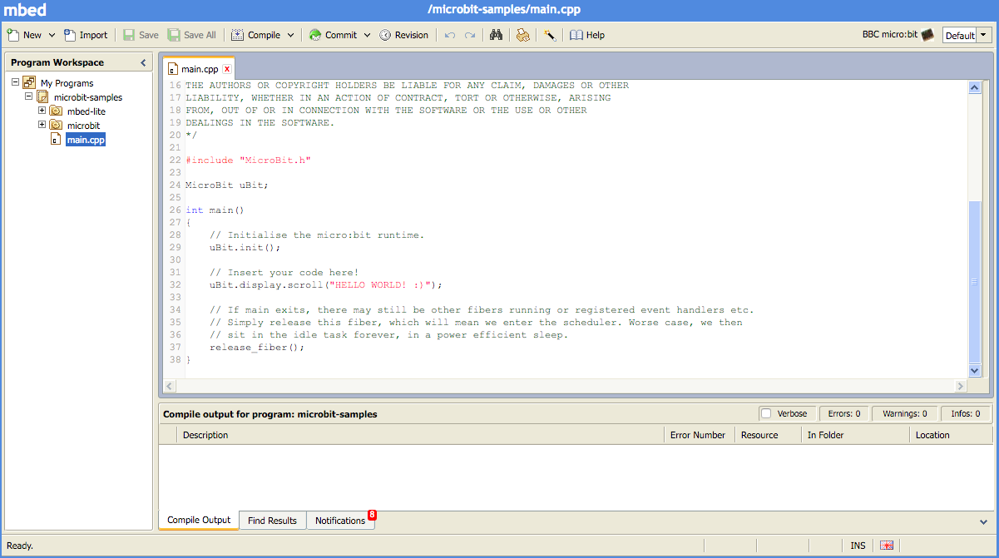

#Web-based C/C++ environments supporting the runtime
| Online compiler | Description |
| — |————-|
|  | ARM mbed has an online IDE for C/C++ development available at http://developer.mbed.org. It is free to use and the BBC micro:bit is one of its officially supported platforms. This online IDE provides a simple interface for writing, compiling and sharing projects like the micro:bit DAL, which is based on the mbed SDK. |
| ARM mbed has an online IDE for C/C++ development available at http://developer.mbed.org. It is free to use and the BBC micro:bit is one of its officially supported platforms. This online IDE provides a simple interface for writing, compiling and sharing projects like the micro:bit DAL, which is based on the mbed SDK. |
#Our friends using the runtime
| Language | Description | | ————- |————-| |
| The Microsoft Programming Experience Toolkit (PXT) provides a programming experience based around JavaScript. The experience has a built-in progression from simple block-based editor, through in-browser text editor with robust auto-completion and auto-fixing, all the way to a professional integrated development environment, Visual Studio Code. | |


mbed¶
ARM mbed has an online IDE for C/C++ development available at http://developer.mbed.org. It is free to use and the BBC micro:bit is one of its officially supported platforms.
The online IDE provides a simple interface for writing, compiling and sharing projects like the micro:bit DAL, which is based on the mbed SDK.

Getting started with mbed.org¶
Hello World on mbed.org¶
- Create an account on developer.mbed.org.
- Visit the micro:bit platform page and add the micro:bit to your compiler by clicking the “Add to your mbed compiler” button in the right hand sidebar.
- Go to the microbit-samples project, and click the
Import this programbutton for that project. The online IDE will open. - Complete the import of the project and then select it in the sidebar and click the
Compilebutton. The build will start. The first build will take longer than subsequent builds. - Your browser will prompt you to download a file. Save this file locally, then drag and drop it onto your micro:bit. The copy triggers the orange LED on the back of the micro:bit to flash; it will stop flashing when the download is complete.
- When the copy process finishes, the micro:bit drive will reset and disconnect from your computer. At this point, your code will also start running!
There is a more detailed guide for using the micro:bit in mbed on the Lancaster-University team wiki on mbed